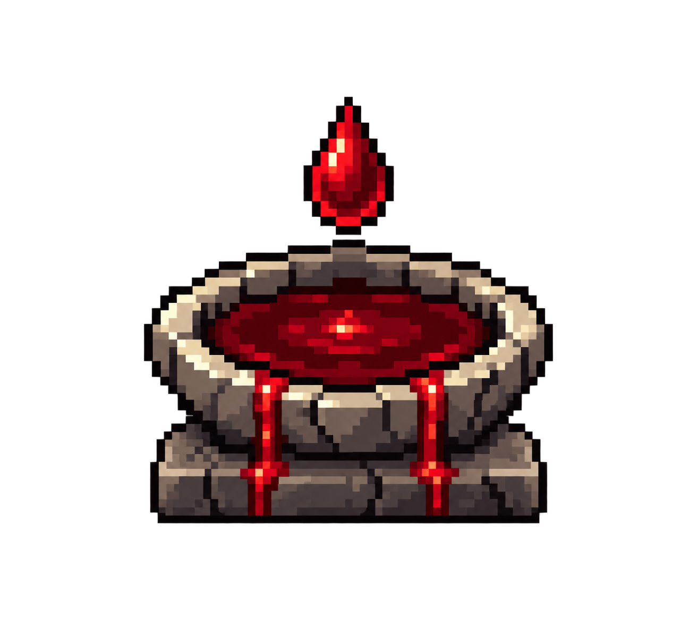

★ ONE STAR
Rupture
2 blood · one action
Drive spilled blood into an enemy's wound and tear it outward. A killing blow produces a larger burst.
Requires a blood-bearing target.
DCSS · GOD DESIGN DRAFT · 18 OCTOBER 2026
Burst blood-bearing enemies. Fight amid the spill. Spend the battlefield on powerful rites.
Working name: Vorr the Red Wake. A local native prototype now includes the rites, blood economy, passive healing, altar and plinth. Implementation and verification ↗

SPARSE PROGRESSION
Red Wake starts the blood economy when you join. Two, four, and six stars add no new feature.
★ ONE STAR
2 blood · one action
Drive spilled blood into an enemy's wound and tear it outward. A killing blow produces a larger burst.
Requires a blood-bearing target.
★★★ THREE STARS
Passive · no activation
Regenerate while standing in potent blood. Steal a little life when your damage removes HP from a blood-bearing enemy.
One shared healing cap across damage sources.
2 blood · one action
Sink into blood underfoot and emerge from another visible fresh pool. The landing erupts in a short spray.
Consumes one unit at each endpoint.
★★★★★ FIVE STARS
8 blood + 5 piety · one action
Raise selected pools into inward-striking blades. Each nearby enemy takes one hit, even where several blades overlap.
Consumes the ground that could sustain you.
Costs are starting points for a native prototype. Red Passage and Blood Communion share the three-star milestone. The separate armour rite remains outside this kit.
THE FIGHT CHANGES THE GROUND
Blood stays potent for roughly twelve ordinary turns. Old stains and fountains supply nothing. Fuel is selected automatically from legal visible deposits.
PORTRAIT FAITH PLINTHS
A collecting trough, split-drop seals, and carved red channels use the existing 60 × 68 frame around the hero. These SVG studies follow the native layer contract; the inset altar is still a reduced concept placeholder.
Shown at 2× for inspection. Decoration can reflect all six favor ranks; powers unlock only at one, three, and five stars. Fuel quantity never changes favor decoration. Each altar links directly to the proposed abilities.
CONCEPT ASSETS
Transparent PNG source masters, with small-size previews to expose the cleanup still required. These are concepts; native game tiles are 32 × 32.
Reference sprites are shown at 4× with nearest-neighbor scaling. Vorr remains a concept master; this comparison exposes the remaining simplification work.
One low foot, a clear rim, two channels, and a hanging drop. Continue simplifying at the actual drawing grid.
A simple split silhouette. Preserve the cleft and outward spatters when reducing internal shading.
#151116#383238#4b1721#8d1d32#d94950#e6d9bbFreshness also uses glints and a broken contour. Colour alone never decides whether blood is usable.
NEXT DESIGN CHECK
Compare a normal pack, an isolated durable foe, a mixed encounter, a wholly bloodless room, and a watery branch. Then tune the blood budget and healing before adding more powers.